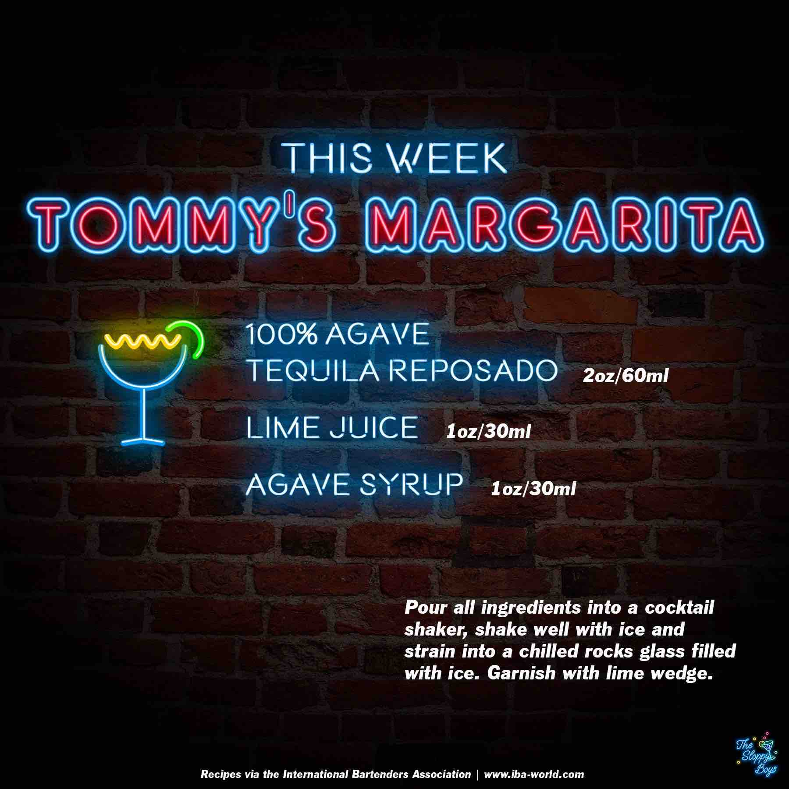

Tommy's Margarita
Ingredients
- 100% Agave Tequila Reposado (2oz/60ml)
- Lime Juice (1oz/30ml)
- Agave Syrup (1oz/30ml)
Steps
- Pour all ingredients into a cocktail shaker, shake well with ice and strain into a chilled rocks glass filled with ice.
- Garnish with lime wedge.
Notes